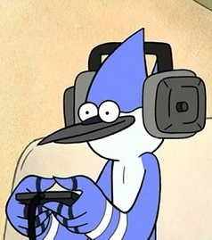

¿Quiénes somos?  Mordo Games es una tienda gamer fundada por Mordecai el 16 de diciembre de 2013 en el barrio de Munro (Vicente Lopez). Nosotros vendemos productos destinados al público gamer.
Contactanos Podes contactarnos vía: Facebook Whatsapp Gmail Y encontrar nuestro local en la calle ALMAFUERTE 4141(MUNRO - VICENTE LOPEZ)